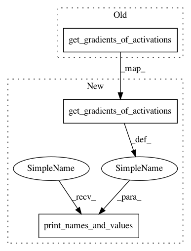

f008a2a43bc4a9eb0760522723c88a70fb9b1f2c,examples/multi_inputs.py,,,#,25
Before Change
m1.compile(optimizer="adam", loss="mse")
utils.print_names_and_values(keract.get_activations(m1, [inp_a, inp_b]))
keract.get_gradients_of_trainable_weights(m1, [inp_a, inp_b], out_c)
keract.get_gradients_of_activations(m1, [inp_a, inp_b], out_c)
// Just get the last layer!
print(keract.get_activations(m1, [inp_a, inp_b], layer_name="last_layer"))
keract.get_gradients_of_trainable_weights(m1, [inp_a, inp_b], out_c)
After Change
m1.compile(optimizer="adam", loss="mse")
utils.print_names_and_values(keract.get_activations(m1, [inp_a, inp_b]))
utils.print_names_and_values(keract.get_gradients_of_trainable_weights(m1, [inp_a, inp_b], out_c))
utils.print_names_and_values(keract.get_gradients_of_activations(m1, [inp_a, inp_b], out_c))
// Just get the last layer!
print(keract.get_activations(m1, [inp_a, inp_b], layer_name="last_layer"))
utils.print_names_and_values(keract.get_gradients_of_activations(m1, [inp_a, inp_b], out_c,
In pattern: SUPERPATTERN
Frequency: 3
Non-data size: 3
Instances
Project Name: philipperemy/keras-activations
Commit Name: f008a2a43bc4a9eb0760522723c88a70fb9b1f2c
Time: 2019-01-03
Author: premy@cogent.co.jp
File Name: examples/multi_inputs.py
Class Name:
Method Name:
Project Name: philipperemy/keras-activations
Commit Name: f008a2a43bc4a9eb0760522723c88a70fb9b1f2c
Time: 2019-01-03
Author: premy@cogent.co.jp
File Name: examples/multi_inputs.py
Class Name:
Method Name: